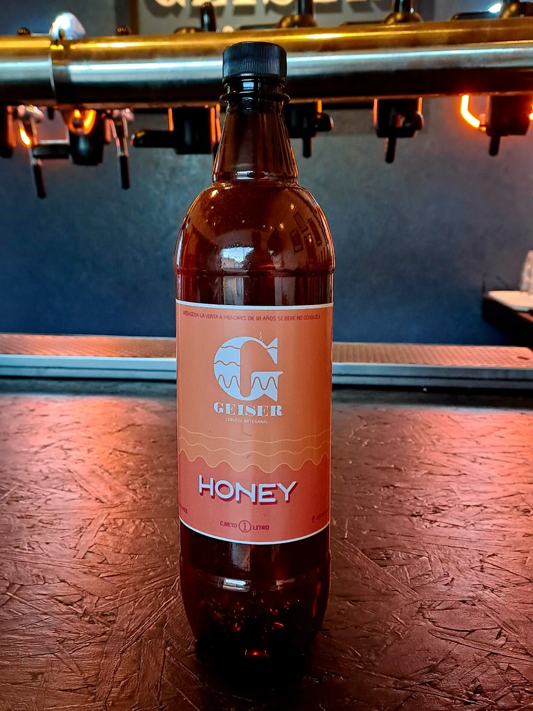

Honey
Honey de color dorado, con delicadas notas florales y dulces aportadas por la miel, que se combinan con una suave base maltosa. De cuerpo ligero, 15 IBU y final refrescante. ¡Nuestra medalla de plata en la Copa Argentina de Cervezas 2024!